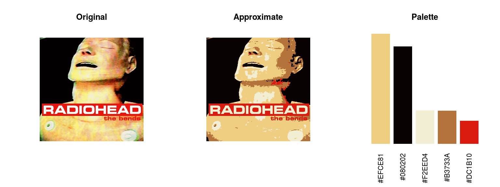
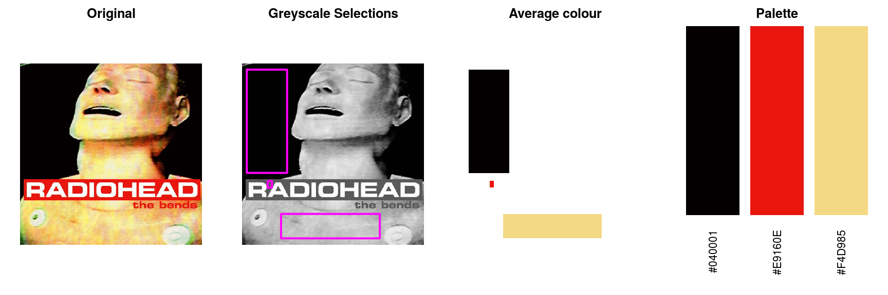
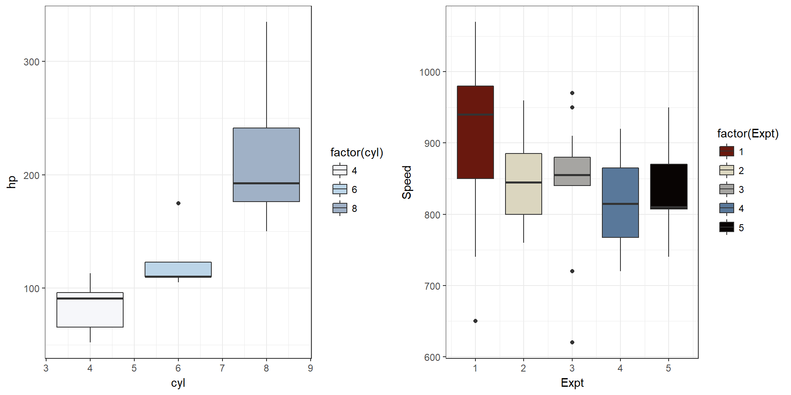

Radiohead album colour palettes.
I thought i’d like to have a go at producing some R colour palettes based on Radiohead album art. I got the idea from the briliant wesanderson library (https://github.com/karthik/wesanderson).
I’m using this project as both an opportuity to learn how to use GitHub whilst simultaneously learning about colour spaces and their implementation in R.
This is massively a work in progress with two main approaches so far…
using Kmeans to make colour palettes in an unsupervised manner 
using manual selections in imageJ and then calculate average colours in R 

Example Usage
Some example plots…here the black in the KID A palette hides the median bar :(
library(ggplot2)
library(inRainbows)p1 <-
ggplot(mtcars, aes(x = cyl, y = hp, group = cyl, fill = factor(cyl))) +
geom_boxplot() +
scale_fill_inRainbows(option = "ok_computer") +
theme_bw()p2 <-
ggplot(morley, aes(x = Expt, y = Speed, group = Expt, fill = factor(Expt))) +
geom_boxplot() +
scale_fill_inRainbows(option = "kid_a") +
theme_bw()gridExtra::grid.arrange(p1,p2, nrow=1)
In fact, I’m not sure how useful the dark (almost black) colours are…